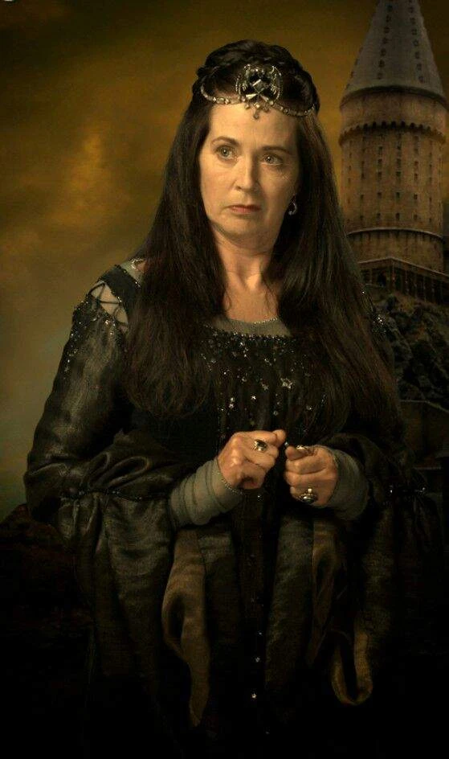

Resumo
A Corvinal, fundada por Rowena Ravenclaw, é uma das quatro casas da Escola de Magia e Bruxaria de Hogwarts.
Seus membros, comumente, são caracterizados por sua inteligência, aprendizado e sabedoria.
Suas cores são o azul e bronze, o animal emblemático é uma águia e sua fantasma patrono é a Dama Cinzenta.
A casa possui um diretor notável, o Mestre de Feitiços Fílio Flitwick.
A casa corresponde aproximadamente ao elemento ar, e é por essa razão que suas
cores foram escolhidas; o azul representa o céu e o bronze pode representar as penas de uma águia.
Rowena Ravenclaw
- Azul
- Bronze
- Águia
- Dama Cinzenta